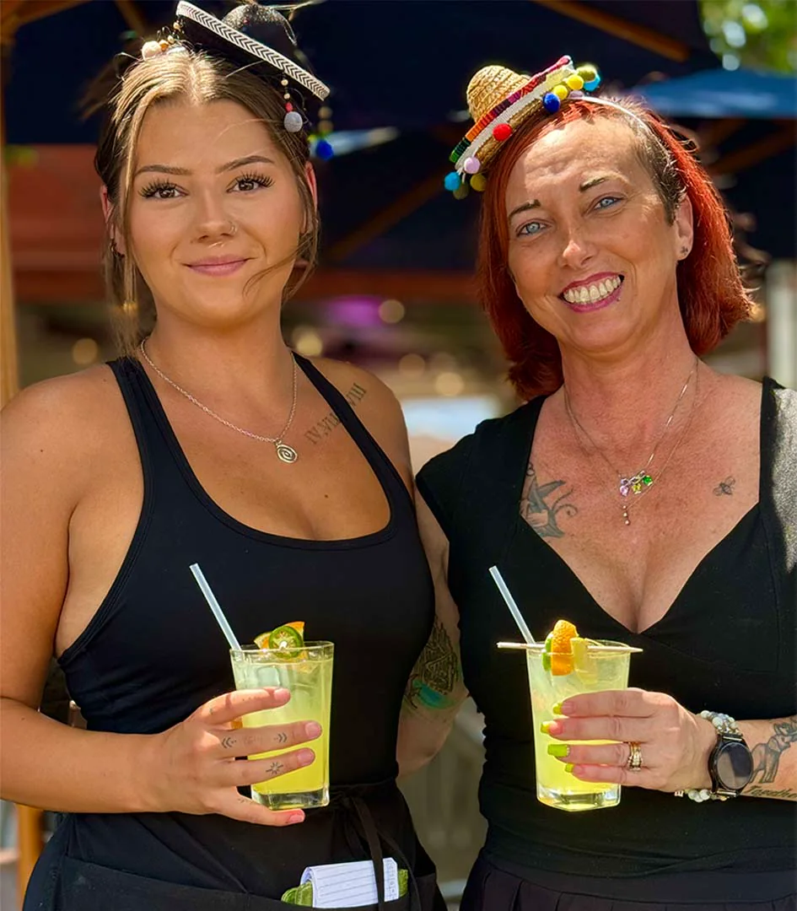
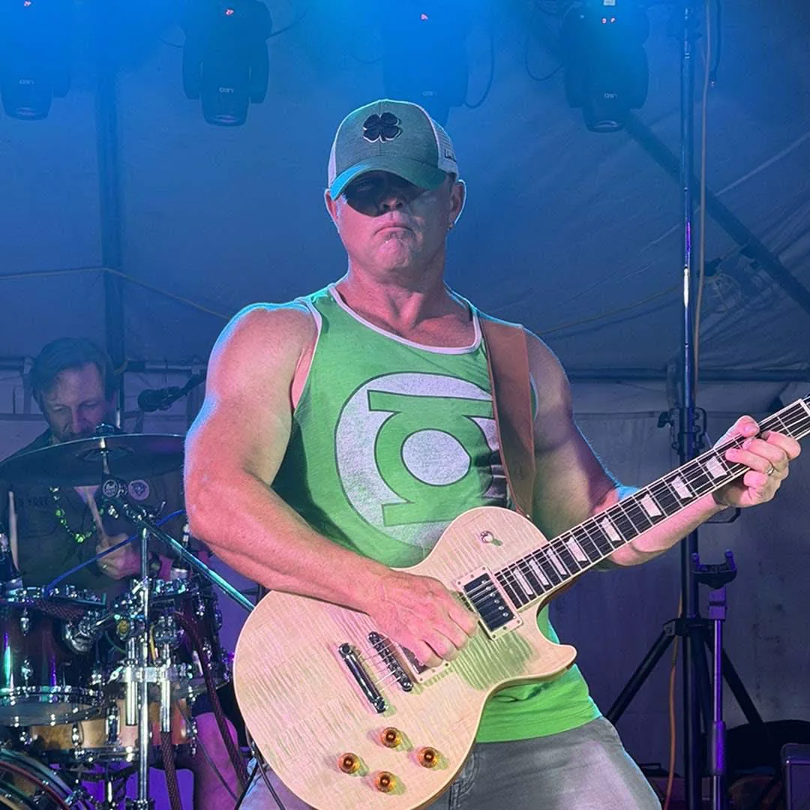
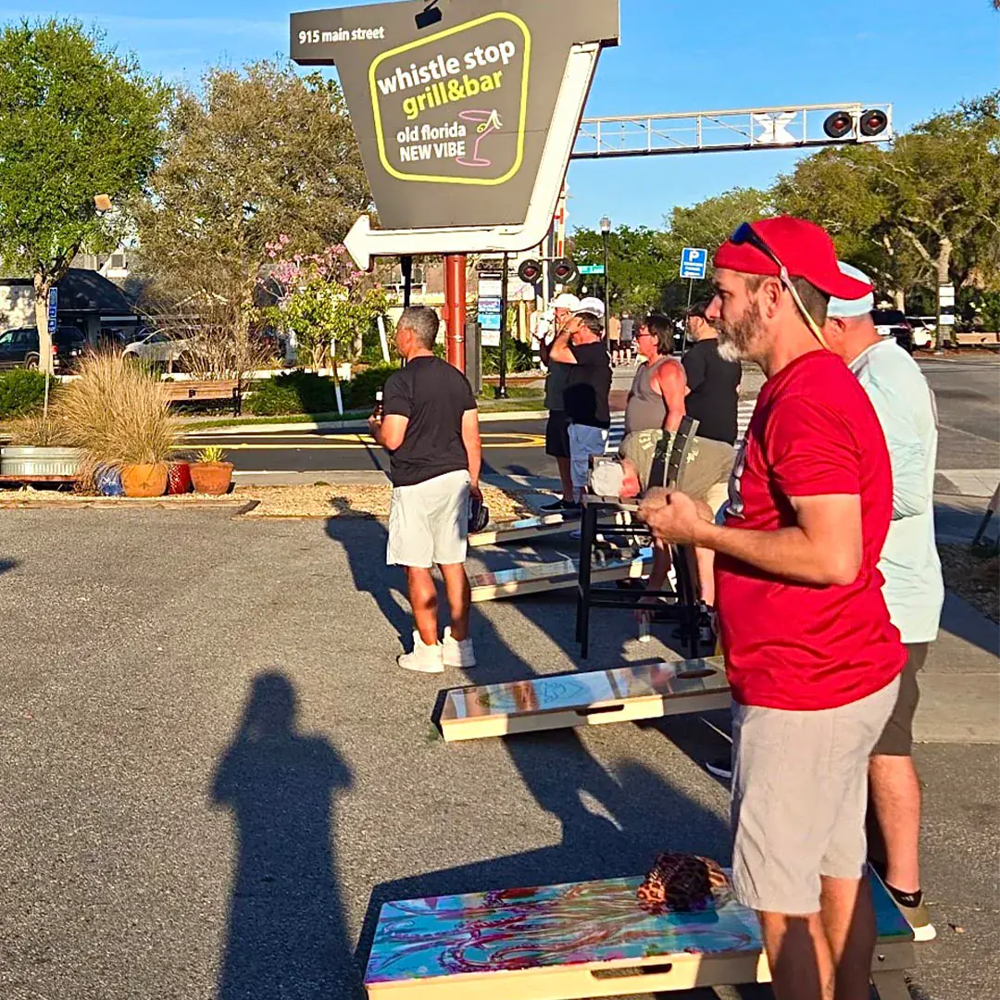
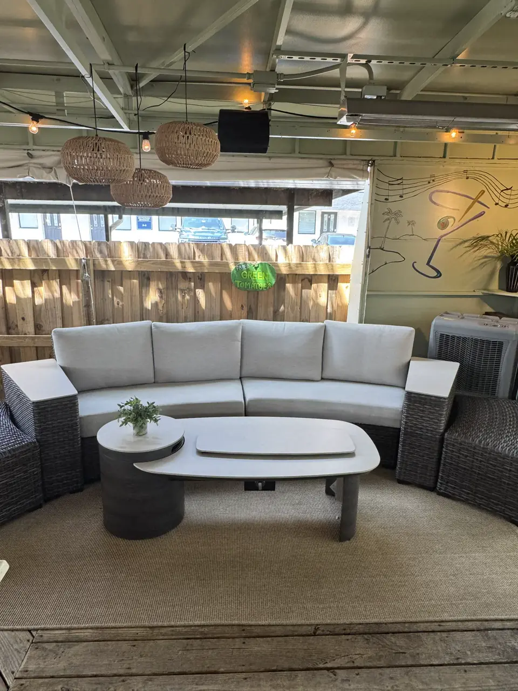
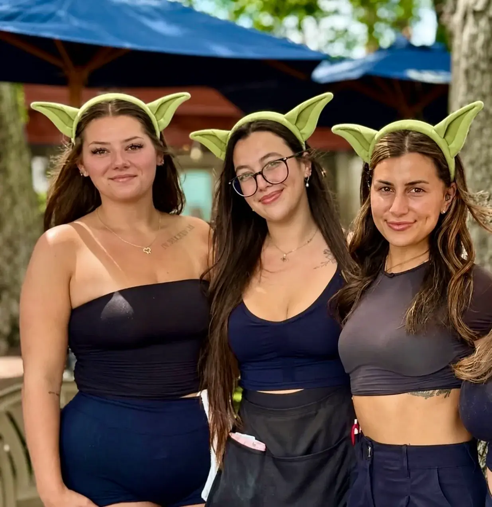

Real. Good. Food.
From fried green tomatoes to Gulf grouper — a menu built for Florida appetites and patio sharing.
View menusOpen Since 1995
For three decades, Whistle Stop Grill & Bar has been where Main Street slows down — cold drinks under the oaks, live music on the patio, and a kitchen that still fries green tomatoes the way locals remember.
This location was home to Frostee Harbor — an ice cream stand and drive-in that was a Safety Harbor landmark for more than 35 years. Owners Dawn & Patrick Pendola transformed it into today’s Whistle Stop Grill & Bar, carrying forward the neighborhood gathering-place spirit with a full kitchen, full bar, and open-air dining under the oaks on Main Street.
The Pendola family didn’t erase the past — they built on it. The same corner that once served cones and car-hop trays now hosts cornhole leagues, book clubs, ukulele jams, and Friday-night bands. Regulars still call it “the Whistle Stop,” and visitors discover it the same way: walking downtown Safety Harbor and following the sound of laughter from the patio.
General Manager: Raven Pendola · Safety Harbor Chamber member


Whistle Stop sits at 915 Main Street — steps from the Safety Harbor marina, Philippe Park, and the shops and spas that draw visitors year-round. Locals come for Tuesday open mic and Wednesday cornhole; tourists stumble in for a Bloody Mary Sunday and stay for the sunset.
From fried green tomatoes to Gulf grouper — a menu built for Florida appetites and patio sharing.
View menus
Open mic Tuesdays, featured artists weekends, and a calendar staff can update without redesigning posters.
Events
Cornhole Wednesdays, book club with the public library, and the ukulele jam — Main Street at its best.
Happy hourThe same scenes that keep guests coming back — covered lounge seating, friends at the rail, and a kitchen that never stops during a Safety Harbor evening.



Open seven days a week on Main Street — walk-ins welcome, patio dogs welcome, and private events for groups who want the whole place to themselves.